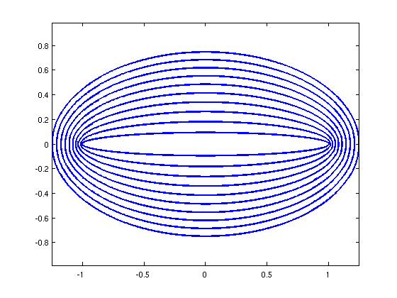
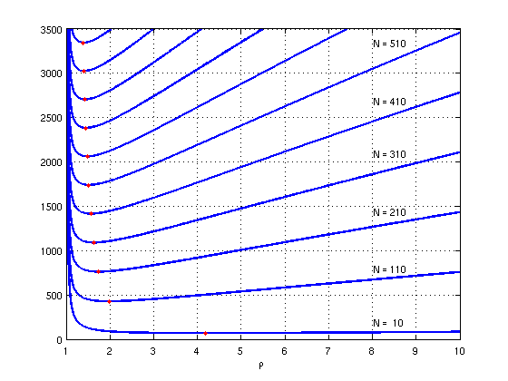

Chebyshev interpolation of oscillatory entire functions
Mark Richardson, 4th October 2011
Contents
(Chebfun example approx/Entire.m)
LW = 'LineWidth'; lw = 2; MS = 'MarkerSize'; ms = 14;
In this example we explore the approximation properties of Chebyshev interpolation for entire functions; that is, functions that are analytic everywhere in the complex plane.
1. Analytic functions
In the following discussion, it will be helpful to utilise the notion of an r-ellipse, which we define as the image of a circle of radius r > 1 in the complex x-plane under the mapping x = (z + 1/z) / 2.
Here are some such ellipses, which we denote by Er:
rr = 1 + (1:10)/10; circ = exp(1i*chebfun('t',[0 2*pi])); clf, hold on for k = 1:numel(rr) rho = rr(k); plot((rho*circ + (rho*circ).^(-1))/2,LW,lw) end hold off, axis equal, box on
Suppose we have a function f that is analytic on [-1,1] and that can be analytically continued into an r-ellipse for some r > 1. Then [1, Chap. 8], the infinity-norm error arising from interpolating f with a polynomial in n+1 Chebyshev points is
max| f - p_n | <= 4 M / ( r^n (r-1) ) ,
where M is the maximum absolute value taken by f on the ellipse Er. This is a geometric rate of convergence. If we require an accuracy of 0 < e < 1 for our approximations, then it will suffice to obtain the smallest n satisfying
4 M / ( r^n (r-1) ) <= e .
Some trivial rearrangement of this expression gives
[log(4/e) - log(r-1) + log(M)]/log(r) <= n .
Choosing an n larger than this will ensure that the interpolant is of accuracy e.
2. Oscillatory entire functions
When the function f is entire, then one may expect the convergence to be even better than geometric, and this is indeed the case. Consider for example, for some positive integer N, the entire function
f(x) = sin(pi N x) .
Because f is analytic in the entire complex plane, the convergence result above must hold for any value of r > 1. An estimate for the parameter M may be obtained by observing that on a given ellipse, a complex exponential is maximised where the ellipse intersects the (negative) imaginary axis, i.e.,
M <= 1/2 exp[ pi N(r - 1/r)/2 ] .
Since this relationship is true for every r > 1, we must find the minimum value of the following expression over all r > 1,
[log(2/e) - log(r-1) + pi N(r - 1/r)/2] / log(r) .
For a given oscillation parameter N and precision e, this may be accomplished using Chebfun. This provides an interesting way to validate the performance of the Chebfun constructor. The plot below shows the function on the LHS of the equation above plotted for different values of N. The mimimum of each function -- and the estimate for the minimum Chebfun degree required for accuracy e = eps -- is plotted in each case as a red dot.
ee = eps; NN = 10:100:1010; clf, hold on, estimates = zeros(numel(NN),1); chebdegrees = estimates; for k = 1:numel(NN) N = NN(k); P = @(p) (log(2/ee) - log(p-1) + N*pi/2*(p-1./p))./log(p); PP = chebfun(P,[1.01 10]); [mn,pos]= min(PP); estimates(k) = mn; ff = chebfun(@(x) sin(pi*N*x),'eps',ee); chebdegrees(k) = length(ff)-1; plot(PP,LW,lw) plot(pos,mn,'.r',MS,ms) end text(8.02,200, sprintf('N = %3i',NN(1))) text(8.02,800, sprintf('N = %3i',NN(2))) text(8.02,1450, sprintf('N = %3i',NN(3))) text(8.02,2100, sprintf('N = %3i',NN(4))) text(8.02,2700, sprintf('N = %3i',NN(5))) text(8.02,3350, sprintf('N = %3i',NN(6))) hold off, xlabel('\rho') shg, grid on, ylim([0 3.5e3]), box on
How do these estimates for the length of the polynomial interpolant compare to Chebfun lengths resulting from Chebfun's adaptive construction process?
est = ceil(estimates); fprintf(' function estimate chebfun length \n') for k = 1:numel(NN) fprintf(' sin( %4i pi x) %4i %4i \n',... NN(k),est(k),chebdegrees(k)) end fprintf('\n')
function estimate chebfun length
sin( 10 pi x) 69 65
sin( 110 pi x) 427 415
sin( 210 pi x) 761 745
sin( 310 pi x) 1090 1071
sin( 410 pi x) 1415 1393
sin( 510 pi x) 1739 1715
sin( 610 pi x) 2062 2037
sin( 710 pi x) 2384 2359
sin( 810 pi x) 2705 2677
sin( 910 pi x) 3025 2993
sin( 1010 pi x) 3346 3313
We see that the estimates from the analysis are very slightly too generous. This is due to our estimate for M not being the tightest upper bound possible. The reason that we used the bound for M given above is that the exponent is easily extracted by the log(M) term; using the tighter bound for M prohibits this.
References:
[1] L.N. Trefethen, Approximation Theory and Approximation Practice, http://www.maths.ox.ac.uk/chebfun/ATAP/